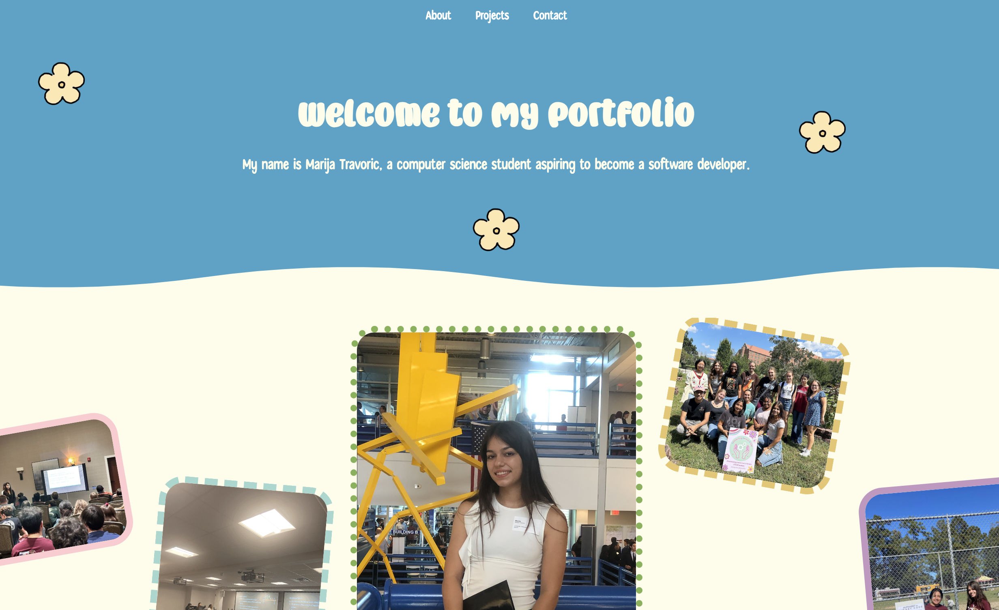

<!-- Homepage -->
<!DOCTYPE html>
<html lang="en"></html>
<head>
    <meta charset="UTF-8">
    <meta name="viewport" content="width=device-width, initial-scale=1.0">
    <title>
        Marija Travoric - Portfolio
    </title>
    <link rel="stylesheet" href="css/style.css">
</head>
<body>
    <header>
        <!-- Hamburger Menu Icon/Button -->
        <button class="nav-toggle" aria-label="toggle navigation">
            <span class="hamburger"></span>
        </button>
        <nav>
            <ul>
                <li><a href="/pages/about.html">About</a></li>
                <li><a href="/pages/projects.html">Projects</a></li>
                <li><a href="/pages/contact.html">Contact</a></li>
            </ul>
        </nav>
        <div id="hero">
            <h1>Welcome to My Portfolio!</h1>
            <p>My name is Marija Travoric, a computer science student aspiring to become a software developer.</p>
        </div>
    </header>
    <div class="image-container">
        
        
        
        
        
    </div>
    <div class="side-picture">
    <div class="projects-wrapper">
        <section id="project_title">
            <h1>Projects</h1>
        </section>
        <section id="grid-container">
            <a href="/projects/portfolio-project.html" class="project">
                <h3>Portfolio Website</h3>
                <p>This project showcases my personal portfolio...</p>
                
            </a>
            <div class="project">
                <h3>Game</h3>
                <p>Description</p>
            </div>
            <div class="project">
                <h3>Interactive Dashboards for Data Analysis</h3>
                <p>Description</p>
            </div>
        </section>
        <a href="/pages/projects.html" style="text-decoration: none; color: inherit;">
            <h1>click here for more...</h1>
        </a>        
    </div>
    </div>
    <section class="experience-section">
        <h2>Work Experience</h2>
            <div class="job">
                <h3>City of Tallahassee Technology and Innovation | Undergraduate Associate</h3>
                <p class="job-duration">Jan. <span class="fallback-font">2022</span> – Feb. <span class="fallback-font">2024</span></p>
                <ul>
                    <li>Compiled and analyzed data to inform key administrative decisions, contributing to process efficiency.</li>
                    <li>Assisted in maintaining comprehensive statistical records and preparing insightful reports.</li>
                    <li>Collaborated with senior staff on special projects, studies, and research initiatives.</li>
                </ul>
            </div>
            <div class="job">
                <h3>ICamp | Tech Camp Counselor </h3>
                <p class="job-duration">May – Aug. <span class="fallback-font">2022</span></p>
                <ul>
                    <li>Mentored and guided a diverse group of rising <span class="fallback-font">9</span>th-<span class="fallback-font">12</span>th graders in technology and computing exploration.</li>
                    <li>Facilitated engaging and interactive activities aligned with weekly themes, fostering interest in information
                        technology, computer science, and computer engineering.</li>
                    <li>Collaborated with fellow counselors to design and deliver technology-enriched sessions, enhancing students’
                        exposure to various STEM careers.</li>
                </ul>
            </div>
        </div>
    </section>
    <section class="leadership-experience-section">
        <h2>Leadership Experience</h2>
        <div class="connecting_girls_to_stem">
            <div class="leadership-role">
                <h3>Connecting Girls to STEM (CGS) | President</h3>
                <p class="leadership-duration"><span class="fallback-font">2022</span> – Present</p>
                <ul>
                    <li>Led the planning and execution of engaging events aimed at fostering interest in STEM among young girls.</li>
                    <li>Collaborated with members to design and implement educational activities, enhancing their leadership and communication skills.</li>
                </ul>
            </div>
            <div class="leadership-images">
                <div class="image-container2">
                    
                    <span class="image-caption">A highlight from our Bristle Bot Workshop: Empowering young girls in STEM with hands-on robotics and coding. Thanks to everyone who brought this inspiring day to life!</span>
                </div>
                <div class="image-container2">
                    
                    <span class="image-caption">At our "Love Potion" workshop, Girl Scouts explored the magic of chemistry, learning about solutions, solvents, and chemical reactions through interactive experiments. </span>
                </div>
                <div class="image-container2">
                    
                    <span class="image-caption">At our gardening with CGS event, we immersed ourselves in the fascinating world of flowers, unraveling their intricate life cycles, and delved deep into the crucial importance of cultivating vegetables for our local Girl Scouts. </span>
                </div>
            </div>
        </div>
        <div class="TSA">
            <div class="leadership-role">
                <h3><span class="fallback-font">2023</span> Florida Technology Student Association Leadership Conference</h3>
                <p class="leadership-duration">October <span class="fallback-font">25</span>th - October <span class="fallback-font">28</span>th, <span class="fallback-font">2023</span></p>
                <section class="white-font">
                <ul>
                    <li>Mentored K-<span class="fallback-font">12</span> students on STEM programs, inspiring the next generation of innovators.</li>
                    <li>Worked with teams of <span class="fallback-font">15</span> students, helping them learn valuable leadership techniques for their future endeavors.</li>
                    <li>Delivered four engaging sessions to over <span class="fallback-font">300</span> students, sharing knowledge and insights about technology and leadership.</li>
                    <li>This experience was a fantastic opportunity to promote FSU and showcase our outstanding programs to middle and high school students and their teachers.</li>
                </ul>
                </section>
            </div>
            <div class="leadership-images">
                <div class="image-container2">
                    
                    <span class="image-caption2">A highlight from our Bristle Bot Workshop: Empowering young girls in STEM with hands-on robotics and coding. Thanks to everyone who brought this inspiring day to life!</span>
                </div>
                <div class="image-container2">
                    
                    <span class="image-caption2">At our "Love Potion" workshop, Girl Scouts explored the magic of chemistry, learning about solutions, solvents, and chemical reactions through interactive experiments. </span>
                </div>
                <div class="image-container2">
                    
                    <span class="image-caption2">At our gardening with CGS event, we immersed ourselves in the fascinating world of flowers, unraveling their intricate life cycles, and delved deep into the crucial importance of cultivating vegetables for our local Girl Scouts. </span>
                </div>
            </div>
        </div>
    </section>
    <footer>
        <p>&copy; <span class="fallback-font">2024</span> Marija Travoric. All rights reserved.</p>
    </footer>
    <script src="js/script.js"></script>
</body>
</html>